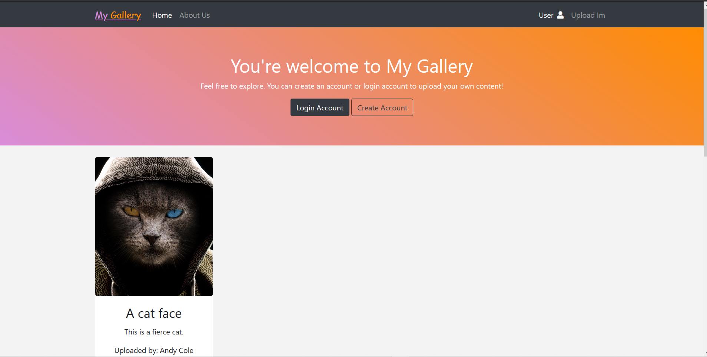
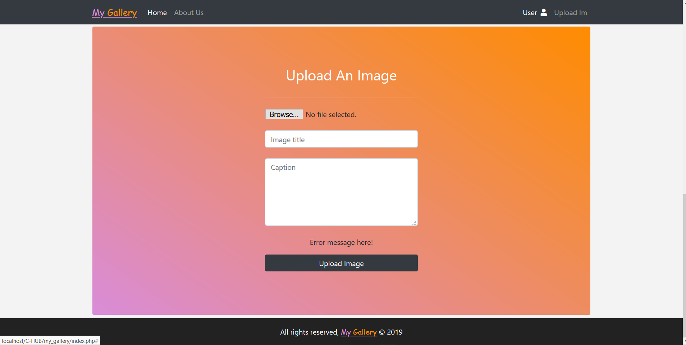

My Work
Return Identification Records Management
This project application provides a platform for the showcasing of photos taken by the general public. It provides a means for any interested user to create an account with email and password as the login credentials. On login, the user can upload images or surf through images available and provide likes. Images uploaded require description to explain what the image is portraying and probably contact of the photographer. This application is still in development and yet to implement all the features expected. Technologies used so far include: HTML, CSS, Bootstrap 4, jQuery, AJAX, PHP, MySQL.


